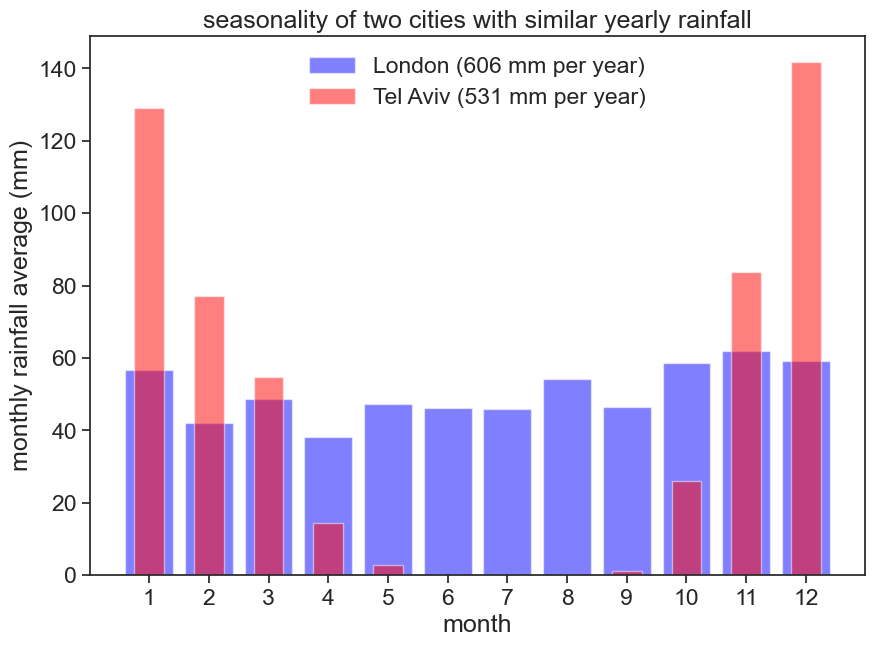
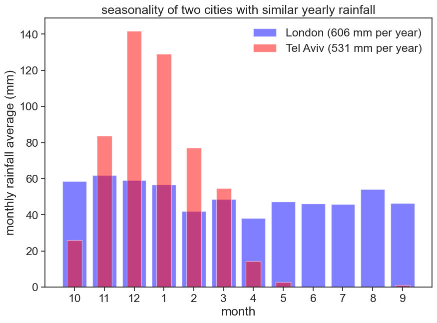

5 Intra-annual variability of precipitation
load data and process it
df_telaviv = pd.read_csv("TEL_AVIV_READING_monthly.csv",
sep=",",
parse_dates=['DATE'],
index_col='DATE'
)
df_london = pd.read_csv("LONDON_HEATHROW_monthly.csv",
sep=",",
parse_dates=['DATE'],
index_col='DATE'
)
monthly_london = (df_london['PRCP']
.groupby(df_london.index.month)
.mean()
.to_frame()
)
monthly_telaviv = (df_telaviv['PRCP']
.groupby(df_telaviv.index.month)
.mean()
.to_frame()
)Show the code
fig, ax = plt.subplots(figsize=(10,7))
# bar plots
ax.bar(monthly_london.index, monthly_london['PRCP'],
alpha=0.5, color="blue", label=f"London ({monthly_london.values.sum():.0f} mm per year)")
ax.bar(monthly_telaviv.index, monthly_telaviv['PRCP'],
alpha=0.5, color="red", width=0.5, label=f"Tel Aviv ({monthly_telaviv.values.sum():.0f} mm per year)")
# axes labels and figure title
ax.set(xlabel='month',
ylabel='monthly rainfall average (mm)',
title='seasonality of two cities with similar yearly rainfall',
xticks=monthly_telaviv.index
)
# ax.set_xticks(monthly_london.index)
# ax.set_xticklabels(roll_months)
ax.legend(loc='upper center', frameon=False)
# save figure
# plt.savefig("hydrology_figures/monthly_tel_aviv_london_bars.png")
Let’s shift the months according to Tel Aviv’s hydrological year:
Show the code
fig, ax = plt.subplots(figsize=(10,7))
Nroll = 3 # number of months to roll
roll_telaviv = np.roll(monthly_telaviv['PRCP'], Nroll)
roll_london = np.roll(monthly_london['PRCP'], Nroll)
roll_months = np.roll(monthly_london.index, Nroll)
# bar plots
ax.bar(monthly_london.index, roll_london,
alpha=0.5, color="blue", label=f"London ({monthly_london.values.sum():.0f} mm per year)")
ax.bar(monthly_telaviv.index, roll_telaviv,
alpha=0.5, color="red", width=0.5, label=f"Tel Aviv ({monthly_telaviv.values.sum():.0f} mm per year)")
# axes labels and figure title
ax.set(xlabel='month',
ylabel='monthly rainfall average (mm)',
title='seasonality of two cities with similar yearly rainfall',
)
ax.set_xticks(monthly_london.index)
ax.set_xticklabels(roll_months)
ax.legend(loc='upper right', frameon=False);
# save figure
# plt.savefig("hydrology_figures/monthly_tel_aviv_london_bars.png")
Another way of representing this data is with polar coordinates:
Show the code
fig = plt.figure(figsize=(10,10))
# radar chart
ax = fig.add_subplot(111, polar=True) # make polar plot
ax.set_theta_zero_location("N") # January on top ("N"orth)
ax.set_theta_direction(-1) # clockwise direction
ax.set_rlabel_position(90) # radial labels on the right
ax.set_rticks([50,100]) # two radial ticks is enough
ax.set_rlim(0,150) # limits of r axis
angles=np.linspace(0, 2*np.pi, 12, endpoint=False) # divide circle into 12 slices
angles=np.append(angles, angles[0]) # close loop, otherwise lines will be open
month_names = ['Jan', 'Feb', 'Mar', 'Apr', 'May', 'Jun', 'Jul', 'Aug', 'Sep', 'Oct', 'Nov', 'Dec']
ax.set_thetagrids(angles[:-1] * 180/np.pi, month_names) # relabel angles with month names
# plot london data
stats_london = np.array(monthly_london['PRCP'].values) # get london data
stats_london = np.append(stats_london, stats_london[0]) # close loop
ax.plot(angles, stats_london, "o-", color='blue', label="london") # plot line
ax.fill(angles, stats_london, alpha=0.25, color='blue') # fill
# plot tel aviv data
stats_telaviv = np.array(monthly_telaviv['PRCP'].values) # get tel aviv data
stats_telaviv = np.append(stats_telaviv, stats_telaviv[0]) # close loop
ax.plot(angles, stats_telaviv, "o-", color='red', label="tel aviv") # plot line
ax.fill(angles, stats_telaviv, alpha=0.25, color='red') # fill
ax.set_title("Monthly rainfall averages")
ax.legend(loc=(-0.1,0.9)); # legend at x=-0.2 so it doesn't overlap with graph
# save figure
# plt.savefig("hydrology_figures/radar_chart_tel_aviv_london.png")
5.1 Seasonality Index
Sources: leddris (2010), Walsh and Lawler (1981)
\langle{P}\rangle= mean annual precipitation
m_i= precipitation mean for month i
SI = \displaystyle \frac{1}{\langle{P}\rangle} \sum_{n=1}^{n=12} \left| m_i - \frac{\langle{P}\rangle}{12} \right|
| SI | Precipitation Regime |
|---|---|
| <0.19 | Precipitation spread throughout the year |
| 0.20-0.39 | Precipitation spread throughout the year, but with a definite wetter season |
| 0.40-0.59 | Rather seasonal with a short dry season |
| 0.60-0.79 | Seasonal |
| 0.80-0.99 | Marked seasonal with a long dry season |
| 1.00-1.19 | Most precipitation in <3 months |
Let’s write some code to calculate the SI for Tel Aviv and London.
Show/hide the code
def walsh_index(df):
m = df["PRCP"].values
R = m.sum()
SI = np.sum(np.abs(m-R/12)) / R
return SI
london_index = walsh_index(monthly_london)
telaviv_index = walsh_index(monthly_telaviv)
print("Seasonality index (Walsh and Lawler, 1981)")
print(f"London: {london_index:.2f}")
print(f"Tel Aviv: {telaviv_index:.2f}")Seasonality index (Walsh and Lawler, 1981)
London: 0.13
Tel Aviv: 1.00Show the code
fig, ax = plt.subplots(figsize=(10,7))
plt.rcParams['hatch.linewidth'] = 3
roll_telaviv
xlim = [1, 13]
total_telaviv = np.sum(roll_telaviv)
ax.plot(xlim, [total_telaviv/12]*2, color="tab:blue", linewidth=3)
ax.set_xlim(xlim)
shaded = roll_telaviv - total_telaviv/12
months = monthly_telaviv.index
ax.bar(months, shaded,
alpha=0.9, color="None", width=1,
hatch="//", edgecolor='k',
align='edge', bottom=total_telaviv/12,
label=f"absolute difference")
ax.bar(months, roll_telaviv,
alpha=0.5, color="red", width=1,
align='edge',
label=f"total rainfall", zorder=0)
ax.text(5.3, 86.5, r"SI$=1.00=$", fontsize=20)
ax.text(xlim[-1], total_telaviv/12, " mean", va="center")
ax.plot([7.8, 12.8], [89.5]*2, color="black", lw=2)
# # # axes labels and figure title
ax.set(xlabel='month',
ylabel='monthly rainfall average (mm)',
title='Walsh and Lawler (1981) Seasonality Index; Tel Aviv',
xticks=np.arange(1.5,12.6,1),
xticklabels=roll_months,
)
plt.legend(loc='upper right', frameon=False, bbox_to_anchor=(1, 0.7),
fontsize=18);
# save figure
# plt.savefig("hydrology_figures/si_walsh_telaviv.png")Show the code
fig, ax = plt.subplots(figsize=(10,7))
plt.rcParams['hatch.linewidth'] = 3
xlim = [1, 13]
total_london = np.sum(roll_london)
ax.plot(xlim, [total_london/12]*2, color="tab:blue", linewidth=3)
ax.set_xlim(xlim)
shaded = roll_london - total_london/12
months = monthly_london.index
ax.bar(months, shaded,
alpha=0.9, color="None", width=1,
hatch="//", edgecolor='k',
align='edge', bottom=total_london/12,
label=f"absolute difference")
ax.bar(months, roll_london,
alpha=0.5, color="red", width=1,
align='edge',
label=f"total rainfall", zorder=0)
ax.text(5.3, 74, r"SI$=0.13=$", fontsize=20)
ax.text(xlim[-1], total_london/12, " mean", va="center")
ax.plot([7.8, 12.8], [75.5]*2, color="black", lw=2)
# # # axes labels and figure title
ax.set(xlabel='month',
ylabel='monthly rainfall average (mm)',
title='Walsh and Lawler (1981) Seasonality Index; London',
xticks=np.arange(1.5,12.6,1),
xticklabels=roll_months,
ylim=[0,83],
)
plt.legend(loc='upper right', frameon=False, bbox_to_anchor=(1, 1.005),
fontsize=18);
# save figure
# plt.savefig("hydrology_figures/si_walsh_telaviv.png")